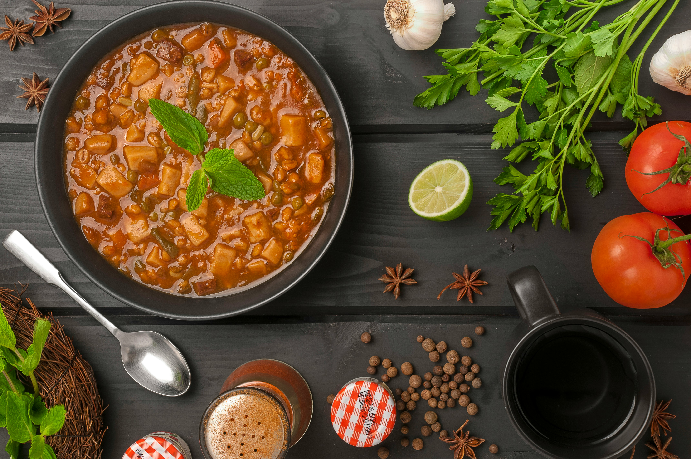
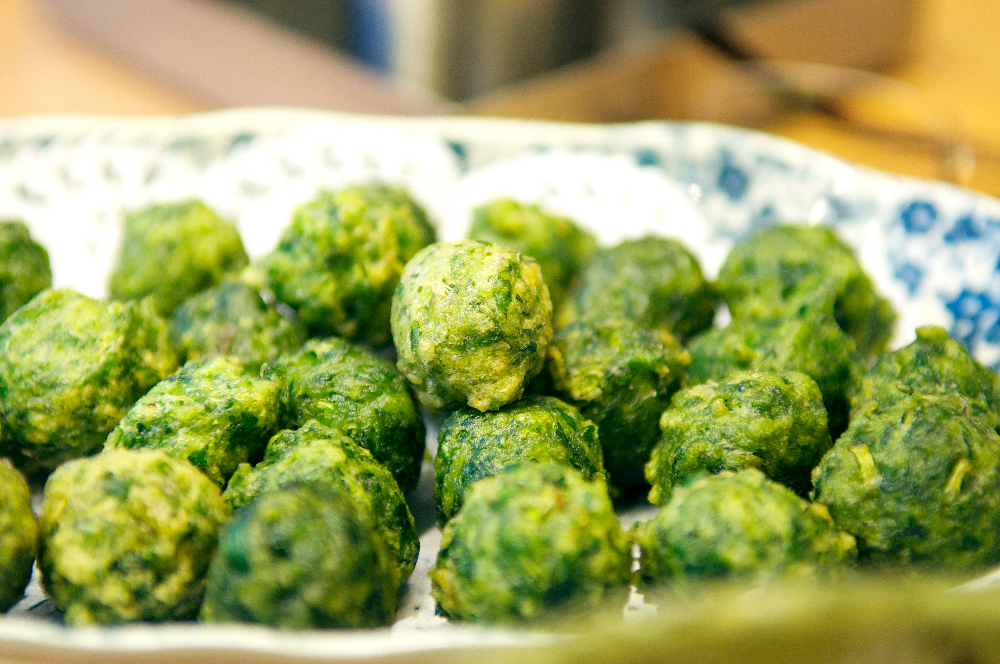
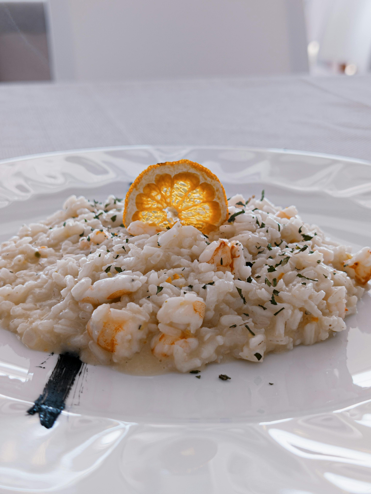

NeuGulasch non-binär
Dieses Gulasch weigert sich, sich zu entscheiden. Nicht Fleisch ODER Gemüse – sondern alles gleichzeitig, fließend, grenzenlos.
Bissitarisch kochen: Gemüse ist Batman, Fleisch darf mitlaufen.
Jetzt reinschauenFleischkonsum hat ein PR-Problem. Im Szeneviertel sowieso, aber auch der gewöhnliche Otto-Normalkonsument bekommt regelmäßig kalte Füße: Schweinepest, Rinderwahnsinn, Hühnerschwachsinn – die Hiobsbotschaften stapeln sich schneller als die Frikadellen-Pucks im Kühlregal beim Discounter.
Trotzdem: Ganz ohne "con Carne"? Da sträubt sich doch bei den Meisten was.
Die Lösung ist nicht Verzicht. Die Lösung ist Degradierung. Fleisch ist wie Dr. Watson neben Sherlock Holmes – emotional wichtig, aber nie im Rampenlicht. Wie Samwise neben Frodo: loyal, aber nicht der Ringträger.
Hier gibt's Rezepte, die schmecken, ohne dass man sich beim Essen rechtfertigen muss. Weder vor Veganern noch vor dem Cholesterinspiegel.
Fleisch als Fußnote, Geschmack als Hauptrolle

NeuDieses Gulasch weigert sich, sich zu entscheiden. Nicht Fleisch ODER Gemüse – sondern alles gleichzeitig, fließend, grenzenlos.
 Bestseller
Bestseller
Das Hackfleisch versteckt sich zwischen Bohnen, Mais und Tomaten wie ein schüchterner Partygast. Aber hey, es ist da – irgendwo.

NeuTiroler Spinatknödel – so gut, dass sich selbst der Klerus daran verschluckt hat. Der Speck? Nur Nebendarsteller.

NeuCremiges italienisches Risotto, bei dem der Pancetta nur als Alibi mitmacht. 93% Reis, Parmesan und Weißwein.

Vietnamesische Nudelsuppe, bei der das Rindfleisch so dünn geschnitten ist, dass es praktisch unsichtbar wird.

Jackfruit täuscht Pulled Pork so gut, dass selbst Texaner zweimal hinschauen. 90% pflanzlich.